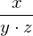
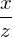

Expression of type ExprTuple¶
from context proveit.number.division¶
In [1]:
import proveit
# Automation is not needed when building an expression:
proveit.defaults.automation = False # This will speed things up.
proveit.defaults.inline_pngs = False # Makes files smaller.
# import Expression classes needed to build the expression
from proveit import ExprTuple
from proveit._common_ import x, y, z
from proveit.number import Mult, frac, one
In [2]:
# build up the expression from sub-expressions
expr = ExprTuple(Mult(frac(one, y), frac(x, z)), frac(x, Mult(y, z)))
Out[2]:
In [3]:
# check that the built expression is the same as the stored expression
%check_expr
In [4]:
# Show the LaTeX representation of the expression for convenience if you need it.
print(expr.latex())
In [5]:
# display the expression information
expr.exprInfo()
Out[5]:
| core type | sub-expressions | expression | |
|---|---|---|---|
| 0 | ExprTuple | 1, 2 | |
| 1 | Operation | operator: 11 operands: 3 |  |
| 2 | Operation | operator: 9 operands: 4 |  |
| 3 | ExprTuple | 5, 6 |  |
| 4 | ExprTuple | 14, 7 |  |
| 5 | Operation | operator: 9 operands: 8 |  |
| 6 | Operation | operator: 9 operands: 10 |  |
| 7 | Operation | operator: 11 operands: 12 |  |
| 8 | ExprTuple | 13, 15 |  |
| 9 | Literal |  | |
| 10 | ExprTuple | 14, 16 |  |
| 11 | Literal |  | |
| 12 | ExprTuple | 15, 16 |  |
| 13 | Literal |  | |
| 14 | Variable |  | |
| 15 | Variable |  | |
| 16 | Variable |  |